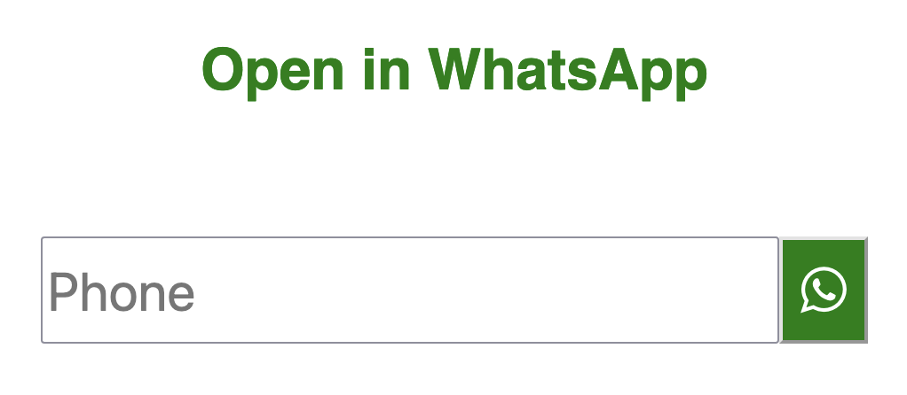

Open WhatsApp conversation without saving to contacts
I have a creative cousin. He uses WhatsApp a lot, and he is lazy.
He was tired of adding random people to his contact list just to open a WhatsApp conversation with them.
Sometimes you just need to message and you don't want to save on the agenda.
I liked the idea and verified there weren't many clean solutions to do this.

You can check the code here. It's very simple!
You can add to your phone home screen, and it will feature a nice black icon :).